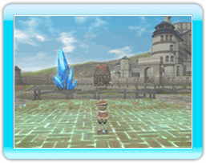
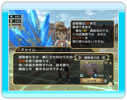

15 |
建物の建設／撤去 |
 |
王様は、城下町の中であれば、好きな場所に好きな建物を建てることができます。場所を決めたら大臣のチャイムを呼び、さっそく建築の準備を手伝ってもらいましょう。 ただし、建築術を使うには、それと引き換えに”精霊力”が必要となります。 １．建築する場所を決定 まず、城下町を歩いて、建築する場所を決めます。地面が光っている場所が「建築可能」のしるしです。  |
２．建築する建物の種類を決定 チャイムを呼ぶと、建築術を使うことができます。「建設しよう！」を選んで、リストの中から建設する建物を選びましょう。  ※最初は建てられる建物の種類は少ないですが、国造りが進むと建物の種類が増えてきます。 建物リストは民家、住民の店、冒険者の店など、カテゴリーごとにわけられています。スティックの左右でカテゴリーを切り替え、上下で各カテゴリーの建物を選べます。 |
３．建物を建築する方向を選択 建物には、建築するのに必要な区画がそれぞれ決まっています。選んだ敷地が必要な区画に足りていれば、スティックの上下左右で建物の入り口をどの方向にするのかを決めて、建築術を発動します。  |
４．精霊力を消費して建築術を発動 場所、建築する建物の種類、方向を決めたら、精霊力を消費して建築術を発動します。なお、精霊力は冒険者がダンジョンの探索で発見する「精霊石」から得ることができます。 
|
●建物の撤去について 一度建てた建物は、ゲームが進むと撤去することができます。建物を撤去するときは、建物を建てるときと同様にチャイムを呼び、「建物を撤去する」を選びましょう。 撤去する建物に住んでいる人は、一時的にお城の中に引っ越しします。お城に引っ越した家族は、もう一度同じ建物を建てることで、城下町へ戻ります。（家長と冒険者以外の家族は、入れ替わる場合があります） ※ 建物の中には、撤去できないものもあります。 |
 |
 |
 |